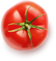
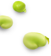
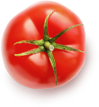
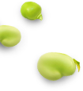
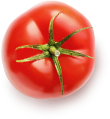
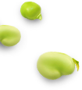

Здоровая еда - это просто!
Сеть магазинов полезных продуктов питания, производство которых основано на принципах и стандартах органического чистых продуктов

  
 Сеть магазинов полезных продуктов питания, производство которых основано на принципах и стандартах органического чистых продуктов
 Органика — это целостная система производства по-настоящему чистой, натуральной и полезной продукции
Мы полностью контролируем весь цикл производства – от поля до прилавка за счет собственной серьезной материальной и научной базы. Наш подход направлен на высокие технологии и достижения научного прогресса